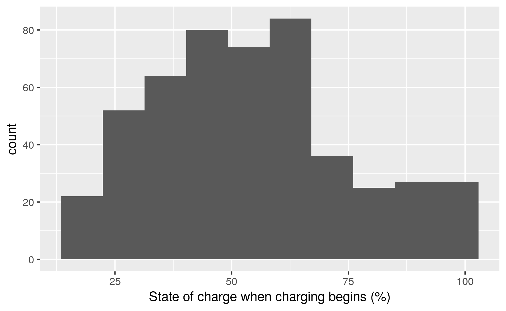

# set correct order for days of the week
#levels(as.factor(df$day_of_week))
df$day_of_week <- ordered(df$day_of_week, levels=c("Monday", "Tuesday",
"Wednesday", "Thursday",
"Friday", "Saturday", "Sunday"))
# set charge type
#df$chargeType <- ifelse(df$charge_power_kw > 0, "Standard charge", "Not charging") # appears not to set not charging label. Why?
# have switched with method I used previously, seems to work fine.
#df$chargeType <- ifelse(df$charge_power_kw >= 7, "Fast charge", "Standard charge")
# set charge type order so charts make sense from left (std) to right (fast)
df$chargeType <- cut(df$charge_power_kw, c(-Inf, 0.01, 7, Inf), labels = c('Not charging', 'Standard charging', 'Fast charging'))
df$chargeType <- factor(df$chargeType, ordered = TRUE)
#<- ordered(df$chargeType, levels=c("Not charging", "Standard charge", "Fast charge"))
df$qHour <- hms::trunc_hms(df$time, 15*60) # truncate to previous 15 min
dt <- as.data.table(df) # creates a data.table for fast data crunching
chargingDT <- dt[charge_power_kw > 0] # select just charging
df$id <- factor(df$id, ordered = TRUE) # To get N vehicles
df$time <- hms::round_hms(df$time, 60)
# removal of silly percentage values
df$state_of_charge_percent[df$state_of_charge_percent > 100] <- NA
df$state_of_charge_percent[df$state_of_charge_percent < 0] <- NABased on and inspired by the UK DoT statistical report 2018.
Data used: /run/user/1001/gvfs/smb-share:server=storage.hcs-p01.otago.ac.nz,share=hum-csafe,user=student%5Cparra358/Research Projects/GREEN Grid/externalData/flipTheFleet/safe/testData/2019_01_07/EVBB_processed_founders.csv
Observations: 73836 Observed charging: 50056 observations (power demand > 0)
The data consisted of 73836 data points from 3 vehicles over M months (X - Y, 2018) derived from FlipTheFleet’s blackbox recorder. The recorder provided measurements at 1 minute frequency of charging behaviour and battery charge state as well as geo-location via GPS.
The capacity of most domestic charging is between 1.8kW to 7kW, whereas charging power above 7kW is available at purpose-built charging stations[@concept2018]. Each charging event was therefore seperated into “Fast” (> = 7kW) and “Standard” (below 7kW).
A charging event was defined as a continuous sequence of 1 minute observations per vehicle when > 0 kW was demand was observed. Difficult to do accurately without date column due to charging occurring through the night when date hashes change. These hashes do not appear to have an order so we cannot distinguish the 2nd from the 3rd Thursday (for example) and so establish correct multi-day sequences.
For a discussion of data limitations see Section 9.
stdMedian <- median(chargingDT[chargeType == "Standard charging"]$charge_power_kw, na.rm = TRUE)
stdMean <- mean(chargingDT[chargeType == "Standard charging"]$charge_power_kw, na.rm = TRUE)
fastMedian <- median(chargingDT[chargeType == "Fast charging"]$charge_power_kw, na.rm = TRUE)
fastMean <- mean(chargingDT[chargeType == "Fast charging"]$charge_power_kw, na.rm = TRUE)Figure 4.1 shows the distribution of observed charging kW demand by inferred charge type. This plot shows that fast charges are relatively rare in the dataset whilst standard charges are much more common and, partly due to our definition, are concentrated around 3 kW. At the present time charging at home is likely to be predominatly standard charging whilst charging outside the home is likely to be a mix of the two.
p <- ggplot2::ggplot(chargingDT, aes(x = charge_power_kw, fill = chargeType, binwidth = 0.1)) +
geom_histogram() +
facet_grid(. ~ chargeType, scales = "free")
# now draw the plot with any fancy extras we want
p + labs(y = "Density",
x = "Power (kW)") +
guides(fill = guide_legend(title = "Charge type:")) +
scale_fill_manual(values=cbgPalette) + # use colour-blind friendly palette
theme(legend.position = "bottom")## `stat_bin()` using `bins = 30`. Pick better value with `binwidth`.Figure 4.1: Observed power demand distribution by day of the week and charge type where charging observed
The median power supplied during a standard charging was 2.93 kW. The mean was slightly lower/higher at 2.82 kW. Fast charging observations had a higher median of 20.37 kW (mean = 23.59).
stdQT <- quantile(chargingDT[chargeType == "Standard charging"]$charge_power_kw)
fastQT <- quantile(chargingDT[chargeType == "Fast charging"]$charge_power_kw)75% of standard charging observations were 2.76 kW or more but the figure was 13.34 kW or more for fast charging
p <- ggplot2::ggplot(dt, aes(x = day_of_week, colour = chargeType, group = day_of_week)) +
geom_boxplot(aes(y = charge_power_kw)) +
facet_grid(. ~ chargeType)
# now draw the plot with any fancy extras we want
p + theme(axis.text.x = element_text(angle = 90, hjust = 1)) +
labs(x = "Day of week",
y = "Power (kW)") +
guides(colour = guide_legend(title = "Charge type:")) +
scale_colour_manual(values=cbgPalette) + # use colour-blind friendly palette
theme(legend.position = "bottom")Figure 5.1: Observed power demand distribution by day of the week and charge type
Figure 5.1 shows the distribution of observed charging kW demand by day of the week. We can see that fast charging varies in demand but standard charging is reltively constant across days.
Discuss any other patterns
Fig: Histogram of charging event durations (faceted by fast vs standard) Can’t do without true date column - see above
Discuss any other patterns
NB: are the durations being truncated at midnight as we do not have consecutive dateTimes?
plotDT <- chargingDT[, .(count = .N), keyby = .(qHour, chargeType, day_of_week)]
# make a weekend facet label
plotDT <- plotDT[, weekEnd := "Weekend"]
plotDT <- plotDT[day_of_week != "Saturday" & day_of_week != "Sunday", weekEnd := "Week day"]
p <- ggplot2::ggplot(plotDT, aes(x = qHour, y = count, colour = day_of_week)) +
geom_line() +
facet_grid(weekEnd ~ chargeType)
p + theme(axis.text.x = element_text(angle = 90, hjust = 1)) +
labs(x = "Time of day",
y = "Count") +
guides(colour = guide_legend(title = "Day of week:")) +
scale_colour_manual(values=cbgPalette) + # use colour-blind friendly palette
theme(legend.position = "bottom")Figure 7.1: Count of observed charging events by type,day of week and time
Figure 7.1 shows the distribution of observed charging by time of day and day of the week. Aggregating counts in this way emphasises the times at which charging most commonly occurs and we can see…
XX haven’t edited beyond here XX
Fig: profile of median charging demand by time of day and day of the week Difficult to do without date column faceted by at home vs not at home Would need GPS data
Charging demand varies considerable by time of day, day of the week and imputed location. Weekdays show … whilst weekends show. Saturdays and Sundays vary with…
Fig: profile of start and end of charging events by time of day and day of the week This we can do faceted by at home vs not at home Would need GPS data
At home charging events tended to begin at HH:MM during weekdays and HH:MM at weekends. We can get “Slow” charging events rather than “home”
Domestic charging has a noticeably different profile to charging patterns for chargepoints at other locations. It suggests that it is common for plug-in vehicle owners to charge overnight at home, and perhaps use the more powerful public chargepoints to top up during the day.
Discuss any other patterns
The duration of charging events (see Section 6) suggests that EVs may be ‘plugged in’ at home (and elsewhere) for considerable durations.
Fig: Distribution of state of charge when evening charge event starts ‘at home’ (histogram (or joy plot) by day of week) 
The figure shows that many vehicles arrive home with greater than 50% charge remaining and would therefore be able to transfer energy to the home during the evening grid peak as a form of demand response.
Fig: Mean state of battery charge at the first ‘at home’ charging observation by hour and day of the week No “at home” data with SOC
should show the timing of ‘coming home’ battery state?
Fig: Distribution of duration of charge events starting ‘at home’ in the evening (by day of the week) Duration difficult to accurately determine without date due to charging occurring through the night
The figure shows that vehicles may then be available for further demand response and/or re-charging for up to XX hours from this point.
Discuss any other patterns
The GPS data used to determine location is not available for x% of observations possibly due to in-garage parking or other physical signal inhibition. Location cannot be deduced in these cases and has instead been imputed as the ‘last’ GPS location recorded. These errors may affect the location/‘at home’ coding.